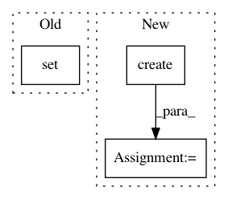

f2823cc5ad25abbe33e76c3555b490fdfbd9c902,tests/test_dependencies.py,,test_custom_base_dir,#,161
Before Change
assert isinstance(sources, set)
assert isinstance(deps, set)
assert main == Source.create("tests/basedir/my_experiment.py")
expected_sources = {
Source.create("tests/__init__.py"),
Source.create("tests/basedir/__init__.py"),
Source.create("tests/basedir/my_experiment.py"),
Source.create("tests/foo/__init__.py"),
Source.create("tests/foo/bar.py")
}
assert sources == expected_sources
@pytest.mark.parametrize("f_name, mod_name, ex_path, is_local", [
After Change
assert isinstance(sources, set)
assert isinstance(deps, set)
assert main == Source.create(os.path.join(TEST_DIRECTORY, "basedir", "my_experiment.py"))
expected_sources = {
Source.create(os.path.join(TEST_DIRECTORY, "__init__.py")),
Source.create(os.path.join(TEST_DIRECTORY, "basedir", "__init__.py")),
Source.create(os.path.join(TEST_DIRECTORY, "basedir", "my_experiment.py")),
Source.create(os.path.join(TEST_DIRECTORY, "foo", "__init__.py")),
Source.create(os.path.join(TEST_DIRECTORY, "foo", "bar.py"))
}
assert sources == expected_sources
@pytest.mark.parametrize("f_name, mod_name, ex_path, is_local", [
In pattern: SUPERPATTERN
Frequency: 3
Non-data size: 3
Instances
Project Name: IDSIA/sacred
Commit Name: f2823cc5ad25abbe33e76c3555b490fdfbd9c902
Time: 2019-07-03
Author: r.sjogren89@gmail.com
File Name: tests/test_dependencies.py
Class Name:
Method Name: test_custom_base_dir
Project Name: IDSIA/sacred
Commit Name: f2823cc5ad25abbe33e76c3555b490fdfbd9c902
Time: 2019-07-03
Author: r.sjogren89@gmail.com
File Name: tests/test_dependencies.py
Class Name:
Method Name: test_gather_sources_and_dependencies
Project Name: NifTK/NiftyNet
Commit Name: d77955ba3cbf7c83b3c3d2e13a6709fcefe17a5d
Time: 2017-08-22
Author: wenqi.li@ucl.ac.uk
File Name: niftynet/utilities/user_parameters_parser.py
Class Name:
Method Name: run